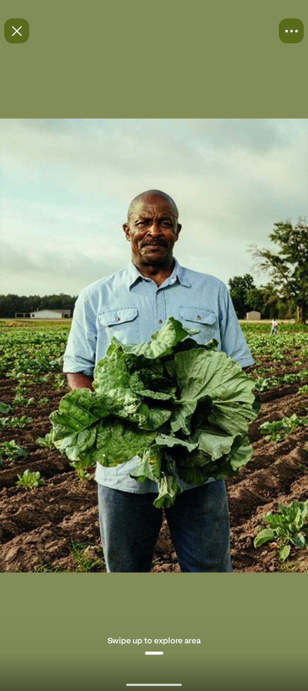
MARKET GREENSFRESH FROM THE MARKET, FOR YOUR TABLE
The Trestle Table.
A colourful market-style selection of everyday Kenyan greens, garden vegetables, ripe fruits, and a few pantry favourites.
Browse the selection ↓PICK YOUR PRODUCE
A little something for every meal
Browse by category and enquire about what you need.
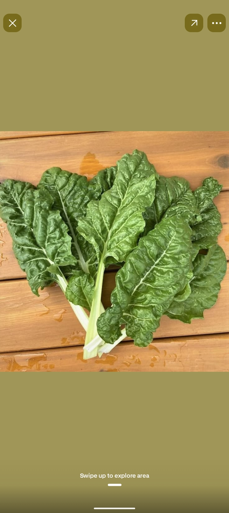
LEAFY & FRESH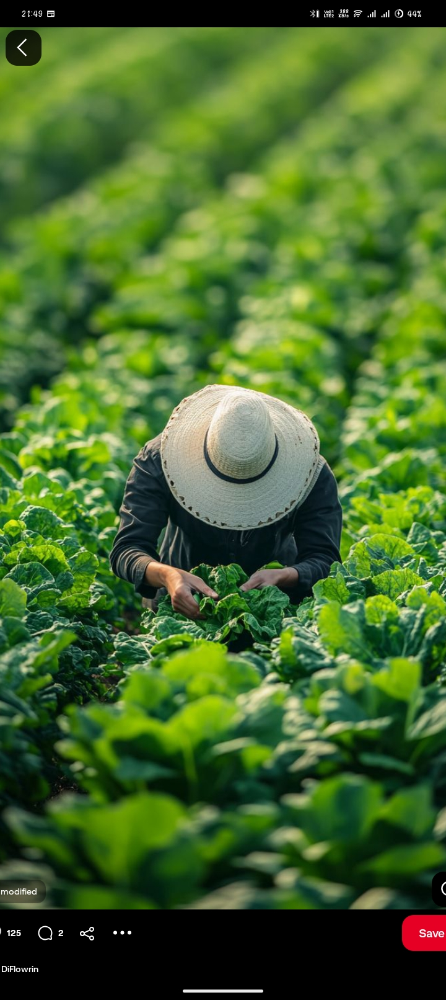
TRADITIONAL GREENSManagu
KSh 70 / bunchDistinctive African nightshade for a hearty traditional meal.
Enquire about this →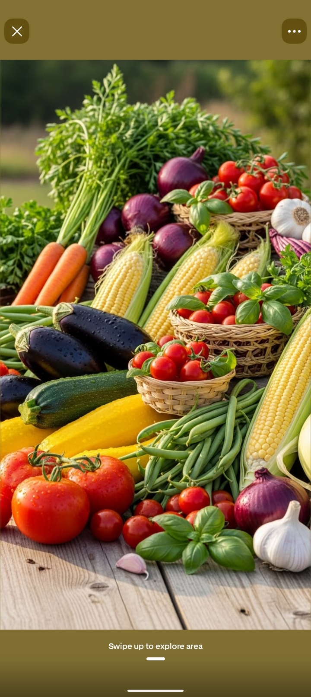
GARDEN FAVOURITE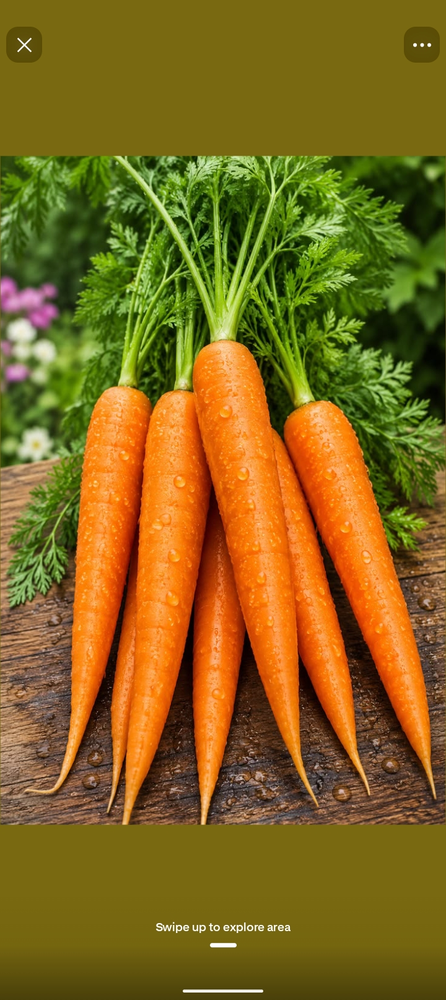
CRUNCHY PICK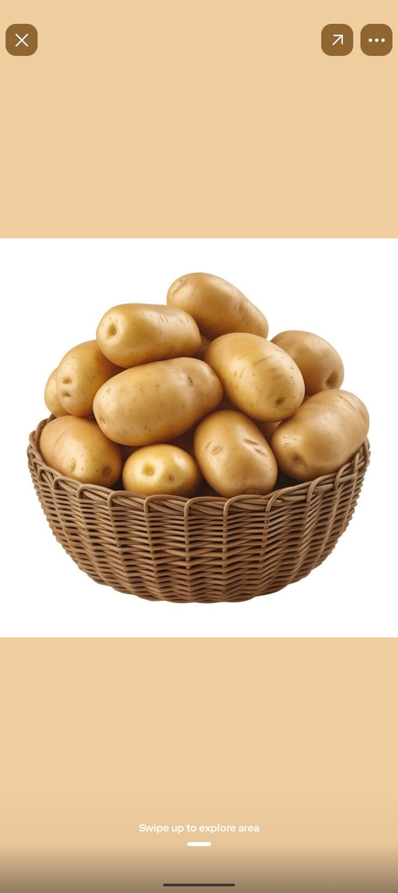
EVERYDAY ESSENTIAL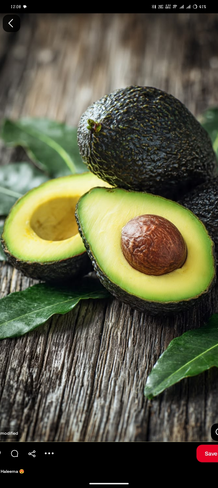
CREAMY & GOOD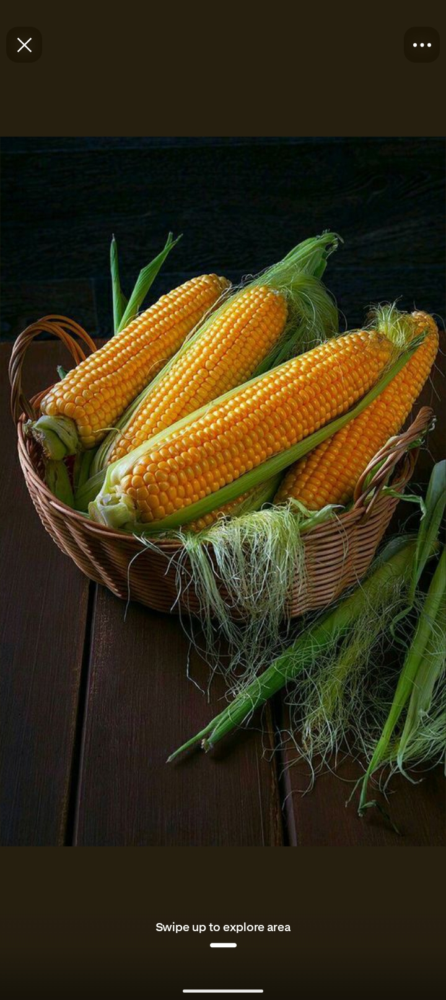
FAMILY FAVOURITEFresh maize
KSh 40 / cobSweet corn for boiling, grilling, or sharing fresh off the cob.
Enquire about this →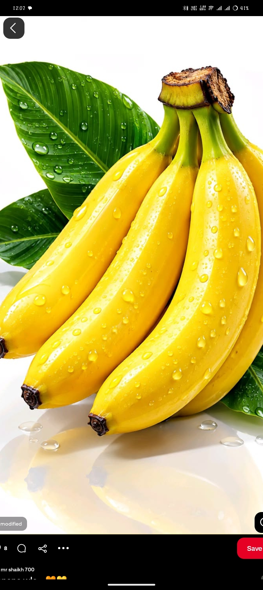
FRUIT BOWL CLASSIC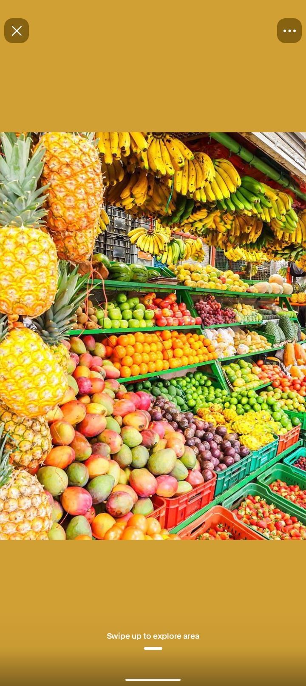
SEASONAL SWEETNESS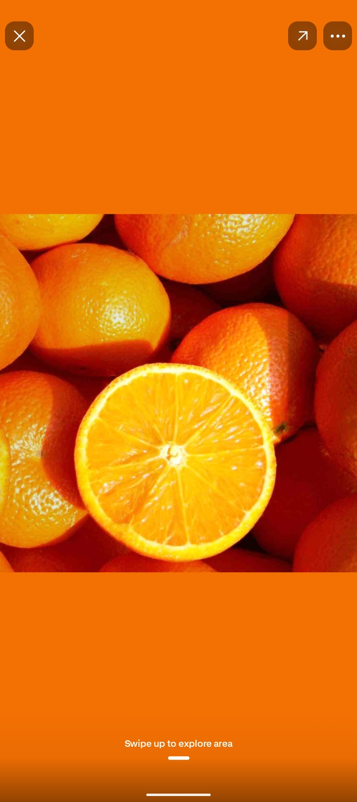
JUICY & BRIGHT
READY TO SHARE
COOL & REFRESHING
FROM THE FARM
Farm eggs
KSh 450 / tray of 30A kitchen essential for breakfast, baking, and more.
Enquire about this →
NATURAL GOODNESS
Local honey
KSh 500 / 500 gA naturally sweet pantry favourite for tea or breakfast.
Enquire about this →Prices are examples for display only. Produce availability and current prices can change by season and market; please enquire to confirm.
Have a shopping list in mind?
Tell us what you’re looking for and the quantities you need.